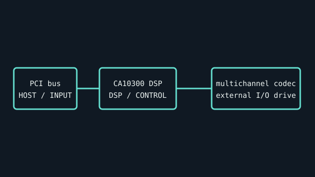

[ INDIVIDUAL COMPONENT // SOUND HARDWARE ]
Creative Sound Blaster Audigy 4 Pro (SB0380)
The Audigy 4 Pro SB0380 is a PCI card bundled with an external I/O drive. The card, breakout, and software are a matched system, not a generic Audigy 4 board.

IDENTIFICATION: Match the complete printed model, revision, bundled breakout, and accessory markings. Specs below describe this named model; family-level variants are not assumed interchangeable.
Specifications
| Catalog subcategory | PCI sound cards |
|---|---|
| Product ID | Creative Sound Blaster Audigy 4 Pro; SB0380 model family |
| Bus / host | 32-bit conventional PCI; requires a compatible PCI slot and legacy driver host. |
| Connectors and I/O | 7.1 analog output, microphone/line inputs, optical/coaxial digital I/O and MIDI through the external breakout/I/O drive; IEEE 1394 port is on the card. Exact ports and bundled accessories depend on retail SKU. |
| Chipset / conversion / protocol | Creative CA10300 / EMU10K2.5 audio processor family. Supports 24-bit conversion; manufacturer materials distinguish stereo high-rate recording/playback from multichannel rates. Do not treat a 192-kHz stereo mode as multichannel 192-kHz operation. |
| Drivers / operating systems | Creative software and drivers for Windows 98 SE/Me/2000/XP and XP x64-era systems. Current Windows support is not claimed; use package release notes for the specific OS. |
| Variant compatibility | SB0380 / Audigy 4 Pro with external I/O drive differs from plain Audigy 4 and Audigy 2 ZS Platinum Pro bundles. Match card part number and cable/breakout; proprietary breakouts are not interchangeable by appearance. |
Service & preservation
Inventory card, I/O drive, connecting cable, FireWire capability, and software disc together. Inspect PCI contacts, 1394 port, and breakout cable before operation. Back up presets and driver installer from the working system before OS migration.
Identification and compatibility checks
- Photograph the product/model label, board silkscreen/revision, connector faces, cable assemblies, and accessory part numbers before installation.
- Check electrical bus and host slot or USB/MIDI protocol support against the exact manual; connector shape alone does not establish compatibility.
- For analog I/O, confirm line/mic/instrument level, phantom-power behavior, channel map, and direction from the model-specific documentation before connecting equipment.
- When software or driver support is uncertain, preserve the last known-good installer and document tested host OS, driver version, and device identifier.
Primary manufacturer & standards sources
- Creative Sound Blaster Audigy 4 Pro official support pageManufacturer model-specific support and legacy software reference.
- Creative Audigy 4 Pro User Guide (PDF)Manufacturer guide for model-specific connections, I/O drive, and software setup.
- PCI-SIG specificationsBus standard reference; compatibility still depends on host slot and board.
Source selection is model-specific where an original manual or vendor product/support page exists. Archived scans preserve manufacturer documentation; operating-system claims are limited to what the cited product/manual materials identify.